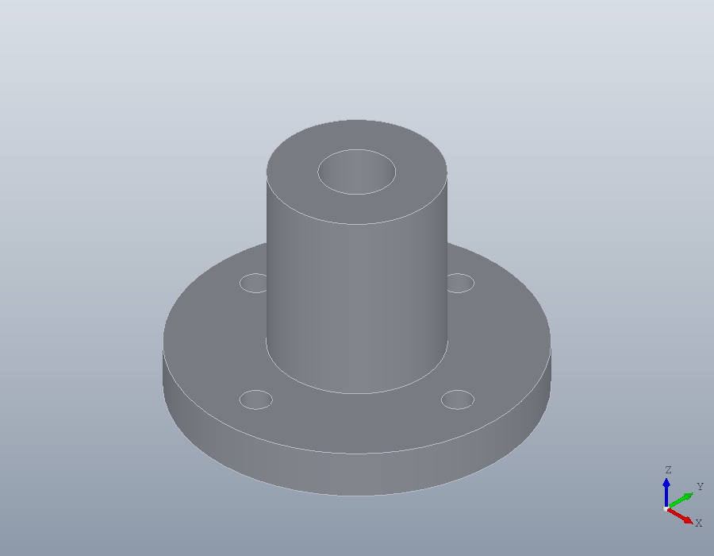
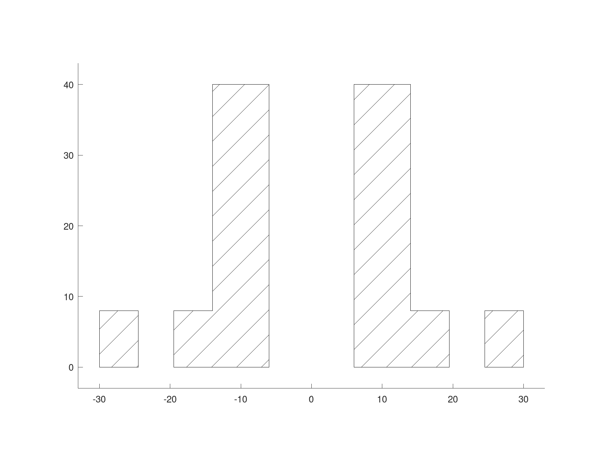
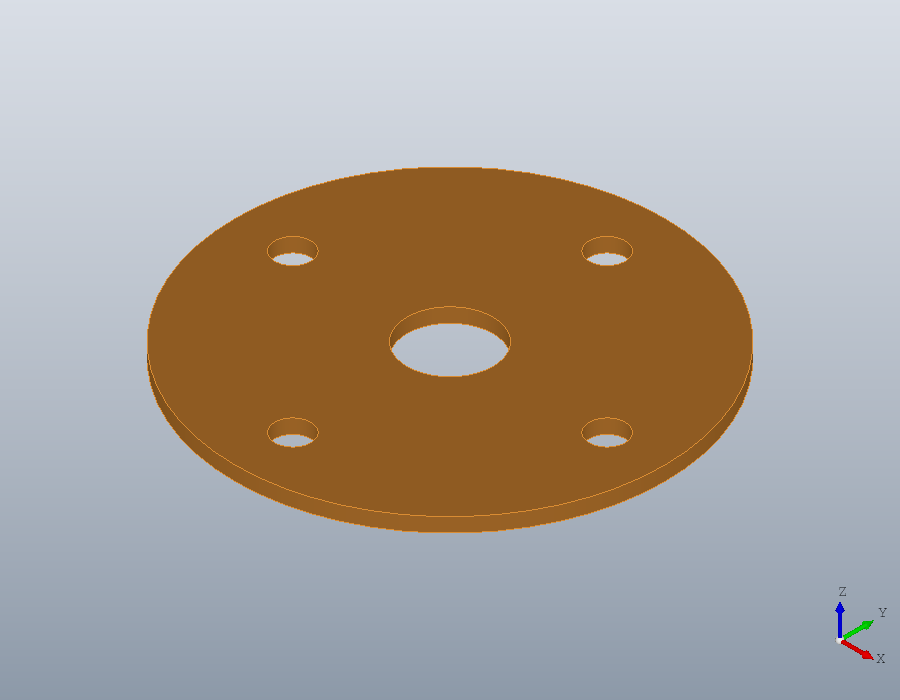
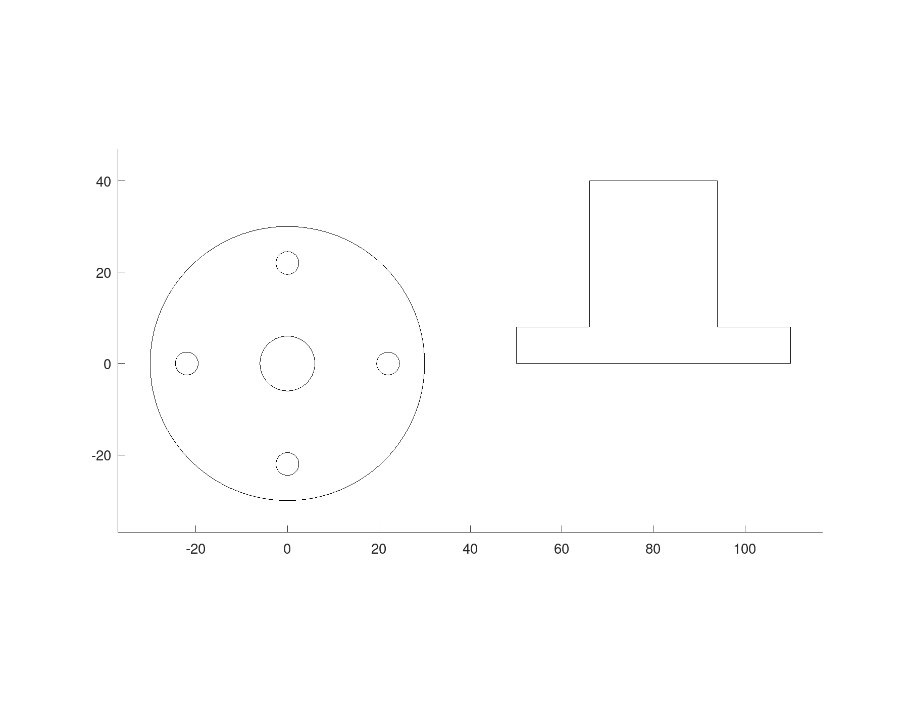

Sections and projections
A solid cut by a plane gives regions exact enough to build from again, and a solid seen along a direction gives its outline as regions too. Both go straight into new solids and into drawings.
A part to cut
A flanged bushing: its profile turned about the z axis, and four bolt holes through the flange. The profile is drawn in the xz plane, where solid.revolve turns it about the plane's own y axis, which is the world z axis.
P = geom.Region ([6, 0; 30, 0; 30, 8; 14, 8; 14, 40; 6, 40]);
P.UCS = geom.UCS ([0, -1, 0], [0, 0, 0], [1, 0, 0]);
S = solid.revolve (P);
S = hole (S, [22, 0, 8; -22, 0, 8; 0, 22, 8; 0, -22, 8], 5, Inf);
show (S);
A cut through the axis
section cuts a solid with the plane of a geom.UCS and returns a row cell array of regions, one for each separate piece, largest first. The plane here holds the axis and two of the bolt holes, so the flange falls apart: two L-shaped halves of the bushing, and two small pieces outside the holes.
U = geom.UCS ([0, -1, 0], [0, 0, 0], [1, 0, 0]);
C = section (S, U);
numel (C)
C{1}
C{4}ans = 4
ans =
geom.Region: an outline of 6 segments, 0 holes
ans =
geom.Region: an outline of 4 segments, 0 holesEvery piece lies in the plane of the cut, in the coordinates of U. Its x axis is the world x axis and its y axis the world z axis, so the pieces read as the bushing seen from the front.
The cut as a drawing
A drawing is flat and lies in the xy plane. Giving a piece the world frame, geom.UCS (), lays it there and keeps its shape in its own coordinates, so the front view lands upright on the sheet. hatch fills each piece with the 45 degree lines that mean cut material.
D = draw.Drawing ('section A-A');
for k = 1:numel (C)
Q = C{k};
Q.UCS = geom.UCS ();
D = D.hatch (Q);
endfor
plot (D);
Cuts across the axis
A plane square to the axis through the flange gives one region with five holes, the bore and the four bolt holes. Higher up, through the sleeve, it gives a ring.
flange = section (S, geom.UCS ([0, 0, 1], [0, 0, 4]));
flange{1}
sleeve = section (S, geom.UCS ([0, 0, 1], [0, 0, 20]));
sleeve{1}ans =
geom.Region: an outline of 2 segments, 5 holes
ans =
geom.Region: an outline of 2 segments, 1 holeA plane that misses the part, or only touches it, cuts nothing and returns an empty cell array.
isempty (section (S, geom.UCS ([0, 0, 1], [0, 0, 100])))ans = 1Building from a section
A section is a region like any other, its circles kept as true arcs, so it builds a new solid. Extruded 2 millimetres, the cut through the flange is a gasket with the flange's outline and every one of its holes, starting where the cut lies, 4 millimetres up.
G = solid.extrude (flange{1}, 2);
G.Colour = [0.85, 0.55, 0.2];
show (G);
Projections
projection gives the outline of a solid seen along the normal of a UCS: the shadow it casts on that plane. With no UCS it looks down the z axis, as OpenSCAD's projection does; OpenSCAD's projection (cut = true) is section here. Seen from above, the bushing is a disc with the bore and the bolt holes in it. Seen from the front, the holes run across the line of sight and leave no mark.
top = projection (S);
numel (top{1}.Holes)
front = projection (S, U);
numel (front{1}.Holes)ans = 5
ans = 0Both views go into one drawing. The front view is laid in the xy plane with its origin 80 millimetres along, so it stands beside the top view.
F = front{1};
F.UCS = geom.UCS ([0, 0, 1], [80, 0, 0]);
D = draw.Drawing ('views');
D = D.region (top{1});
D = D.region (F);
plot (D);
A mesh is cut the same way: section on a polymesh.Mesh gives regions too, which fit turns back into lines and arcs.